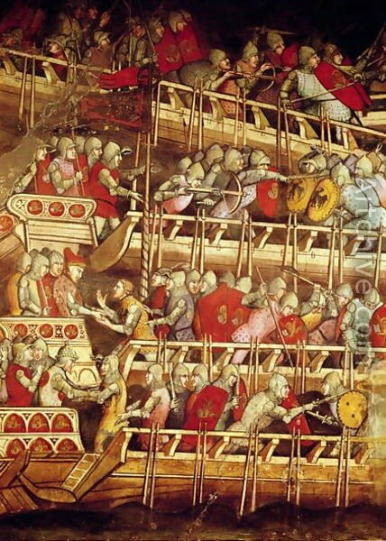
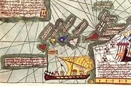
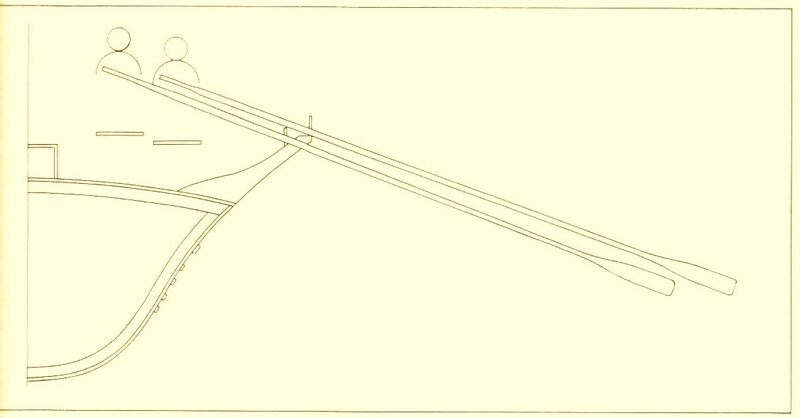
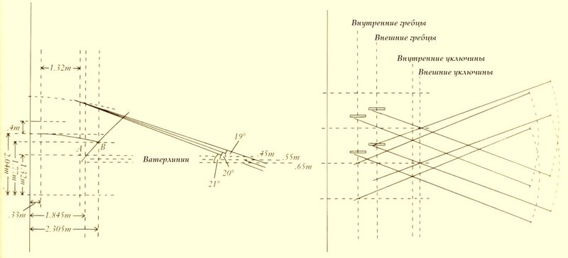

Стиль alla sensile: галеры Карла Анжуйского
Кораблестроительное искусство, говоритъ Г. Дюгамель, было-бы многимъ легче и простѣе, ежели бы дѣло состояло въ томъ, чтобъ дать Кораблю одно какое нибудь качество, но трудность предстоитъ въ собраніи и совокупленіи всѣхъ нужныхъ качествъ въ одномъ и томъ же Кораблѣ.
А.А.Шишков Морской словарь по кораблестроению
История иногда настолько повторяет сама себя, что невольно начинаешь понимать сторонников академика Фоменко, которые не устояли перед соблазном сделать из этого новую религию.
Создание флота в сицилийском королевстве при Карле Анжуйском повторилось почти в точности при создании нашего флота при Петре. Как в том, так и в другом случае фигурировала некая модель галеры, у сицилийцев – «красная галера из Прованса», у нас - галера из Голландии, по образцу которой, как портной по лекалу, «сшили» первые боевые корабли будущих больших флотов. Как и в том, так и в другом случае галеры-родоначальники этих флотов заслуживают самого достойного памятника в бронзе или в граните. Но нет таких памятников на нашей Земле.
Однако хватит о грустном. Итак, мы установили, что самые ранние документы, которые проливают некоторый свет на использование системы гребли alla sensile, датируются промежутком между 1269 и 1284 гг. и относятся к бумагам из канцелярии короля Сицилии Карла I Анжуйского. Самое замечательное в этих бумагах то, что содержащихся в них сведений хватило, чтобы создать первую в истории корабля реконструкцию поперечного сечения галеры и системы гребли, основанную не на гипотезах, а на дошедших до нас документальных данных. Реконструкция эта осуществлена профессором Джоном Прайором. Не все в ней безупречно, но для наших рассуждений о стилях гребли материала более чем достаточно.


Самим атласом можно полюбоваться здесь.
Для гребцов, исходя из имеющихся данных, существовали две возможности. Либо они использовали метод 'stand-and-sit’, который позже был господствующим на галерах четырнадцатого века, либо они сидели на всем протяжении гребка, как это было на византийских дромонах и ранее при античном стиле гребли. Однако расстояние между уключинами (interscalmia), которое по имеющимся документам составляло около 1м 20см, было бы неоправданно большим для античного стиля. Поэтому можно сделать заключение, что на этих галерах гребцы на соответствующей фазе гребка поднимались в полный рост. Из этого можно сделать другой вывод, что рукоятка весла поднималась где-то на 1,25 м над уровнем палубы.

Сейчас, глубоко не вдаваясь в теорию, которую с помощью Провидения рассмотрим в будущем, порассуждаем, что это может дать для увеличения скорости галеры. Известно, что начиная с гребных кораблей античности и до введения системы гребли с несколькими гребцами на весло (a scaloccio) важнейшая характеристика весла – его передаточное отношение (отношение внутреннего плеча рычага – от захвата на ручке до уключины – к внешнему плечу – от уключины до точки, определяющей центр давления воды на лопасть) сохранялось в пределах от 1:2,8 до 1:3,4. Многовековой опыт показал, что именно такое передаточное отношение позволяет добиться максимальной скорости. Учитывая, что длина весел на анжуйских галерах была 6,86 м, угол их наклона к поверхности воды (при полностью погруженной лопасти) для оптимального варианта должен был составлять порядка 15°. Конечно, на реальной галере этот угол мог бы быть и больше, увеличение угла ведет к потере выигрыша в силе при гребле.
Высота борта рассматриваемой нами галеры над поверхностью воды при полной нагрузке неизвестна. Прайор считает, что грузовая ватерлиния галеры проходит где-то в районе нижнего ребра бархоута, который по сохранившимся документам располагается на 0,455 м ниже линии борта. Вообще, если суммировать все известные данные для галер Средних Веков и Ренессанса, ватерлиния у них проходит при полной нагрузке от 0,45 до 0,75 м ниже уровня палубы. Учитывая, что при четырехбалльном (по шкале Бофорта) шторме высота волны составляет около 3,5 футов (~1,07 м), уже при таком волнении даже при наличии шпигатов волны будут перехлестывать галеру. Вот тут мы и вспомним нашего адмирала Шишкова, цитату из которого привели в эпиграфе. Строители галер могли достичь выигрыша в каком-либо качестве их лишь за счет проигрыша в другом. Необходимость максимизировать механические характеристики весла требуют уменьшения угла, которое он составляет с поверхностью воды до минимально возможного значения, но при этом нельзя допускать слишком большого уменьшения высоты надводного борта по рассмотренным выше причинам.

При подъеме ручки весла, как мы установили, на 1,25 м над палубой при угле весла с поверхностью в 15° высота борта над ватерлинией не будет превышать 17,5 см, что, конечно же, невозможно для живой галеры. При наличии постицы, т.е. при выносе уключины в сторону от диаметральной плоскости корабля, угол, который будет составлять весло с уровнем воды колеблется от 19° при высоте борта 0,455м до 21° при высоте борта 0,65м. Когда мы будем разговаривать о конструкции галеры, мы обсудим эти цифры более подробно.
На знаменитой фреске Спинелло Аретино из Palazzo Publico в итальянской Сиене (ок. 1400 г., фрагмент показан в начале поста, общий вид можно посмотреть здесь), изображающей эпизод сражения между флотами Фридриха I Барбароссы и венецианцами, показаны как раз такие галеры, на которых четко видно попарное расположение весел в одном ярусе. Точно, как на реконструкции анжуйской галеры.
К концу XIII века эпоха галер-бирем стала клониться к закату. Марино Сануто Торчелло, о котором мы уже говорили , около 1320 г. писал в своей Liber Secretorum:
Должно быть известно, что в год 1290 почти на всех галерах, выходящих в море, на каждой банке сидело по два гребца. Позже более проницательные люди поняли, что на каждой банке могут располагаться по три гребца. Сейчас почти каждый использует это нововведение.
Но о том, как от бирем перешли к триремам мы расскажем в следующий раз.